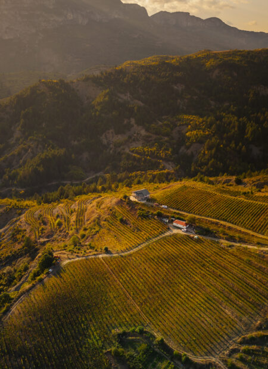
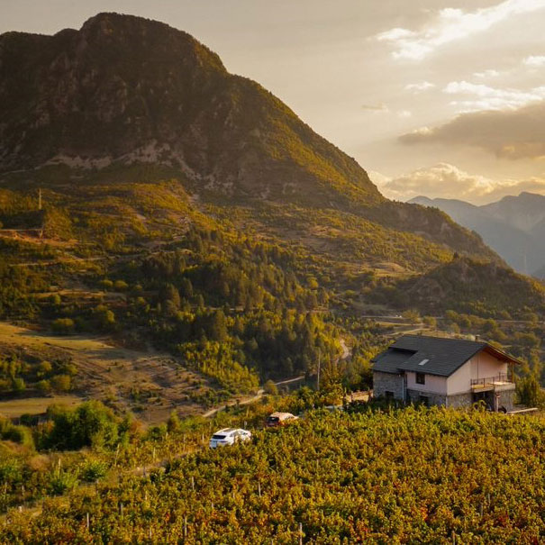
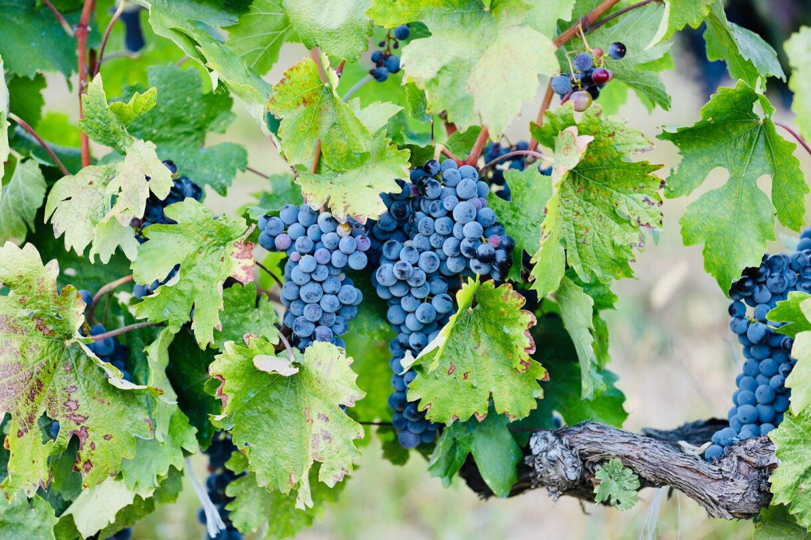
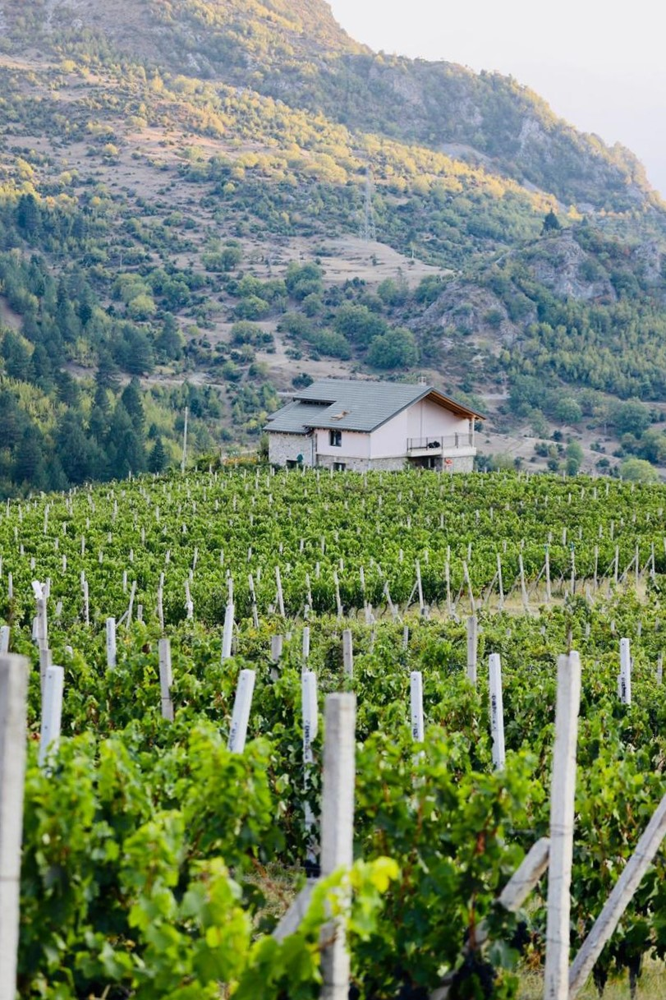

Est. 1987 · Leskovik, AlbaniaThemeluar 1987 · Leskovik, Shqipëri
A heroic vineyard. An ancient grape.
Vreshtë heroike. Rrush i lashtë.
ScrollShiko
"
We don’t just pour wine — we share stories, views, and a piece of our heart.
Ne nuk shërbejmë thjesht verë — ne ndajmë histori, peizazhe dhe një pjesë të zemrës sonë.
— The Fejzulla Family, Leskovik
— Familja Fejzulla, Leskovik

750 m · Leskovik · Albania750 m · Leskovik · Shqipëri
Chapter I — The BeginningKapitulli I — Fillimi
A Bet on the Mavrud GrapeNjë Bast mbi Rrushin Mavrud
In 2008, Maksim Fejzulla and his wife Diana came to the mountains near Leskovik to build a small hydropower plant. What they found instead was 6 hectares of abandoned land, 48,000 vines, and a calling. Today the estate has grown to 16 hectares — putting Leskovik on the world wine map.
Në vitin 2008, Maksim Fejzulla dhe bashkëshortja e tij Diana erdhën në malet pranë Leskovikut për të ndërtuar një hidrocentral të vogël. Ç'u gjetën atje ishte 6 hektarë tokë e braktisur, 48,000 hardhi dhe një thirrje. Sot prona ka arritur 16 hektarë — duke vendosur Leskovikun në hartën botërore të verës.

Chapter II — The PhilosophyKapitulli II — Filozofia
Minimal Hands, Maximum TruthDuar Minimale, E Vërteta Maksimale
The grapes reach an average of 23% Brix sugar at optimal ripeness. The result is not just a bottle — it is a record of a season, a soil, and the strong mountain winds that carry the scent of pine forests across the Vjosa valley.
Rrushi arrin mesatarisht 23% sheqer Brix në pjekurinë optimale. Rezultati nuk është thjesht një shishe — është një regjistrim i një sezoni, një toke, dhe erërave të forta malore që bartin aromën e pyjeve të pishave nëpër luginën e Vjosës.

750m
Altitude
Lartësia
16ha
Vineyard
Vreshti
23°
Brix at Harvest
Brix në Korrje
2008
Founded
Themeluar

The Terroir of Leskovik
Terrori i Leskovikut
What the Mountain Gives the Wine
Çfarë i Jep Mali Verës
03
01
🌱
Limestone Soil
Tokë Gëlqerore
Calcareous limestone at pH 7.2 — the same rock that forms the ceiling of Lake Neuron, lending mineral depth to every wine.
Gëlqeror kalkarik me pH 7.2 — i njëjti shkëmb që formon tavanin e Liqenit Neuron, duke i dhënë thellësi minerale çdo vere.
02
🏔️
Mountain Climate
Klimë Malore
750–780 m altitude · cool nights · strong winds · a 3-metre rainwater reservoir for sustainable irrigation.
750–780 m lartësi · net të freskëta · erëra të forta · rezervuar uji shiu 3 metra për ujitje të qëndrueshme.
03
🌊
River Vjosa
Lumi Vjosa
Europe's last wild river flows near the estate, moderating temperatures and providing the pristine water source that sustains the ecosystem.
Lumi i fundit i egër i Europës rrjedh pranë pronës, duke moderuar temperaturat dhe duke siguruar burimin e ujit të pastër.
CRAFT
The Way We Work
Mënyra Jonë e Punës
Three Principles. One Wine.
Tre Parime. Një Verë.
I
Hand Harvest
Vjelja me Dorë
Every grape selected by hand. No machine can taste. No algorithm can feel when a cluster is ready.
Çdo kokërr zgjidhet me dorë. Asnjë makinë nuk mund të shijojë. Asnjë algoritëm nuk ndjek pjekurinë.
II
Native Fermentation
Fermentim Natyral
Wild yeasts from the vineyard itself drive fermentation — slower, unpredictable, and far more honest than any commercial alternative.
Maja e egër nga vetë vreshti drejton fermentimin — më i ngadaltë, i paparashikueshëm dhe shumë më i sinqertë.
III
Time as Ingredient
Koha si Përbërës
Oak and amphora aging is not a formula. It is a conversation between wine and vessel — we simply listen.
Plakja nuk është formulë. Është bisedë ndërmjet verës dhe enës — ne thjesht dëgjojmë.
World Record · Discovered 2025Rekord Botëror · Zbuluar 2025
127 Metres Beneath Your Glass127 Metra Nën Gotën Tuaj
Directly below the Max Mavrud vineyards lies the world's largest known subterranean thermal lake — Lake Neuron. Discovered in 2025 by a team of geologists, this hidden wonder sits 127 metres underground in a vast limestone cavern. The same calcareous rock that forms its ceiling is the soil that nourishes every vine above it, lending the wines a distinctive mineral depth that cannot be replicated anywhere else on earth.
Pikërisht nën vreshtat e Max Mavrud ndodhet liqeni më i madh termal nëntokësor — Liqeni Neuron. I zbuluar në 2025, ndodhet 127 metra nën tokë. I njëjti shkëmb gëlqeror që formon tavanin e tij është toka që ushqen çdo hardhje, duke i dhënë verërave thellësi minerale unike.